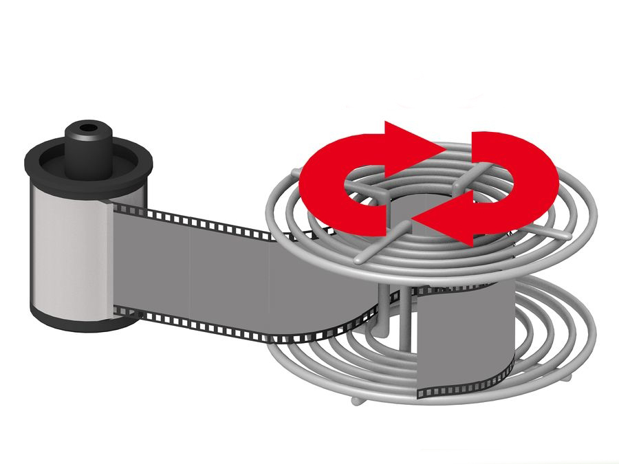
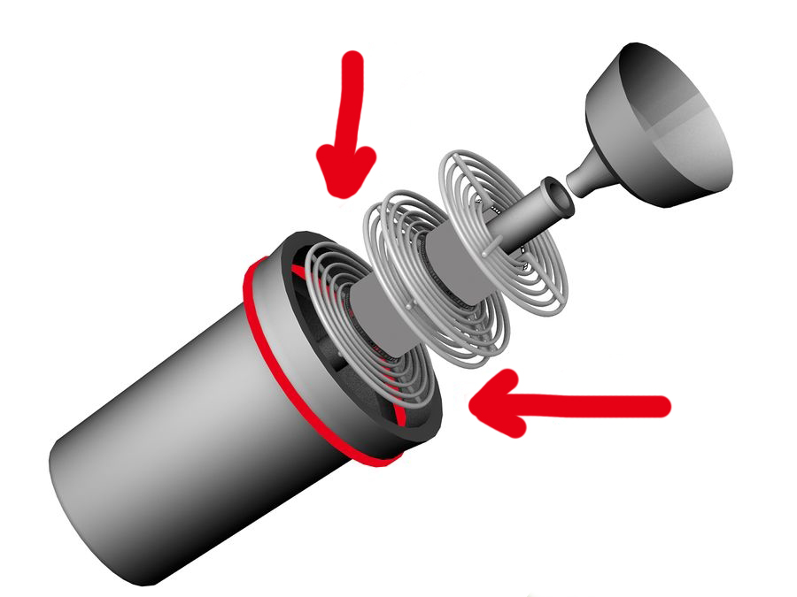

Spool the film onto the film reel.
While not touching the surface of the negative, slide the negative into the opening of the reel. Slide about 4 inches (10.2 cm) of film into the reel. Start walking the film onto the reel by twisting one side of the reel back and forth. To be clear on this, keep your left hand steady, and with your right hand twist the right side of the reel forward, then bring it back. Continue doing this until all the film is loaded onto the reel. If your reel looks like the one in the image, it's not the auto-loading type, and you will need to trap the loose end of the film under the spring clip in the center, then fit the film into the space between the spiral wires as you rotate the reel. It's a lot easier to do than it sounds. Squeezing the film to make it slightly curved will help.

Place the reel inside the developing tank, and screw the lid onto the tank.
The tank is now light-tight, and you can turn on the lights. Even though the developing tank has a hole in the top for pouring in the chemicals, it is in fact light-tight. Pour water into the tank, let stand for 1 minute, this is called pre-wetting and will make the film swell up and accept the developer solution. Pour out the water.
